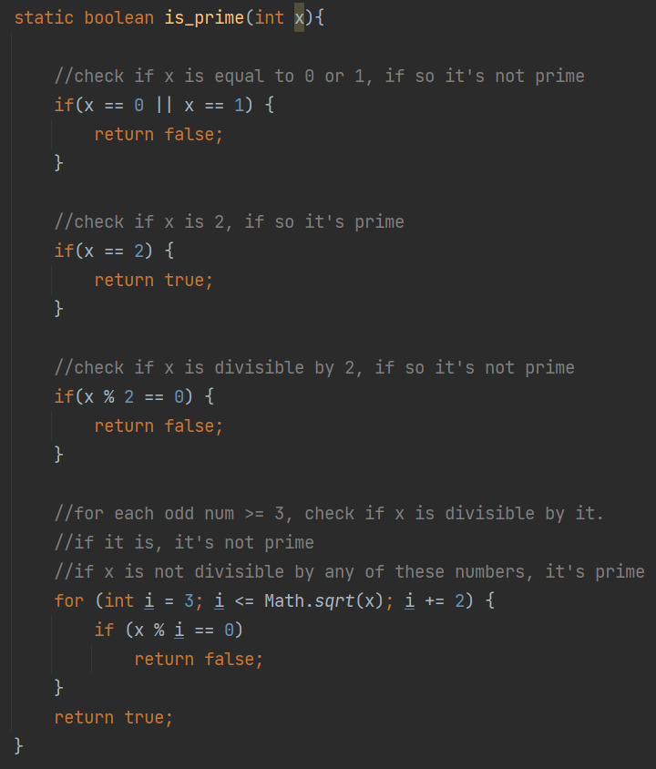
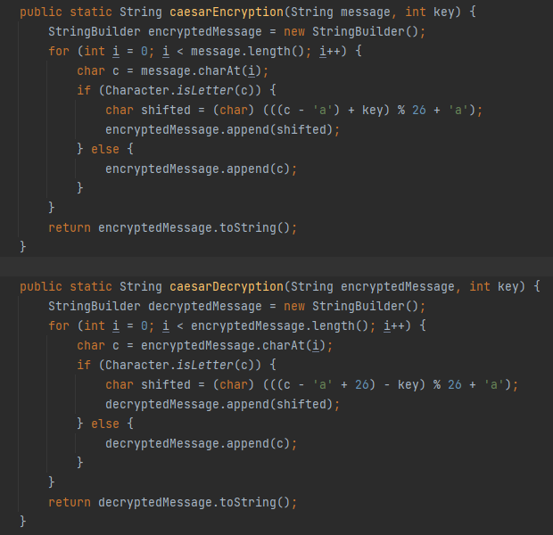
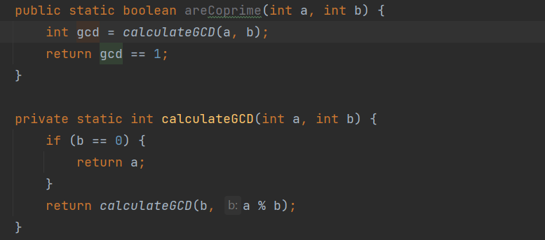
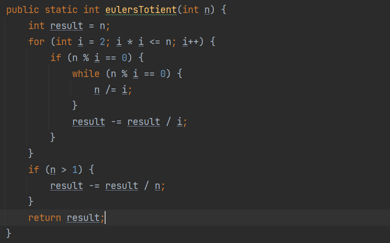

This page will provide some basic programs pertaining to cryptology
Programs that check if a number is prime:
Java
Python

Check the output! (input any number)
Programs that encipher and decipher with the Caesar Cipher:
Java
Python

Programs that find if two numbers are coprime:
Java
Python

Programs that find the euler's totient of a number:
Java
Python

Modular Arithmetic
Caesar Cypher
Vigenere Cypher
Diffie-Hellman
RSA
XOR Cypher
Cryptology Programs
References